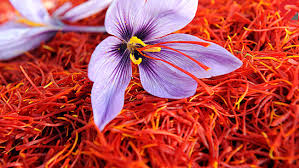
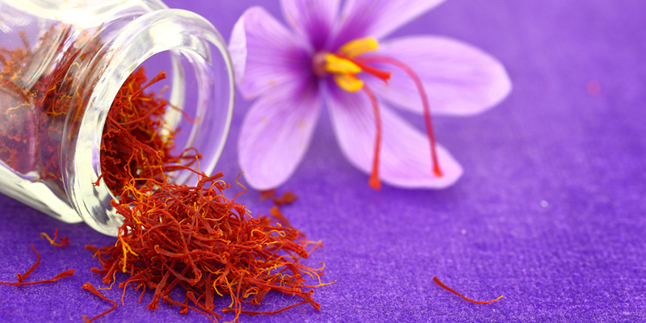
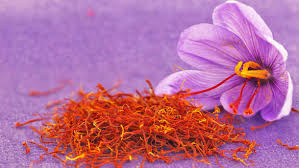
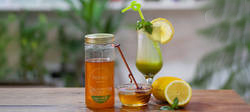
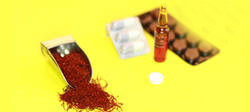
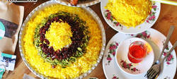

موضوع
نوشته شده در تاریخ 5 مهر
زعفران یکی از ارزشمند ترین گیاهان طبیعت است که کاشت آن از زمانهای گذشته تا به حال در قسمت هایی از کشورمان بخصوص نواحی جنوبی خراسان تداوم یافته است
ادامه مطلب
موضوع
نوشته شده در تاریخ 5 مهر
اغلب مناطق زعفرانکاری در فقر شدید و ادواری آب کشاورزی و باران بسر می برند دارای آب و هوای نسبتاً گرم و خشک می باشند از طرفی این مناطق در فاصله بعیدی از پایتخت قرار دارند و فاقد استعداد های صنعتی و تولیدی می باشن
ادامه مطلب
موضوع
نوشته شده در تاریخ 5 مهر
یژگی های خاص این محصول شامل نیاز کم به آب ، ماندگاری محصول در مدت طولانی ، حجم و وزن کم ، عدم نیاز به ماشین آلات سنگین و پرهزینه زراعی ، بهره برداری ۷-۴ ساله.
ادامه مطلب
درباره ما
ضامن شبکه ای است متعلق به کشاورزان فوق العادهی ایران. شما اینجا می توانید، با این کشاورزها آشنا شوید و از آنها محصولات مورد نیازتان را آنلاین بخرید.
پست های پر بازدید
  شبکه های اجتماعی